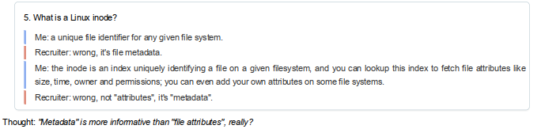
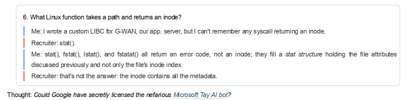
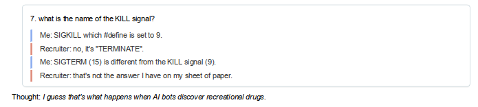
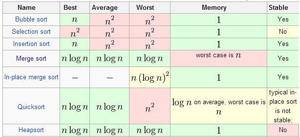
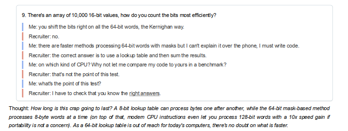
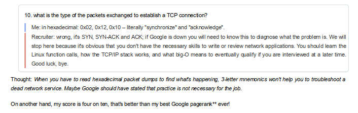
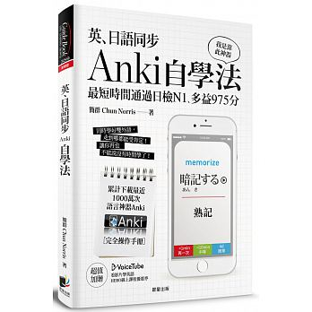
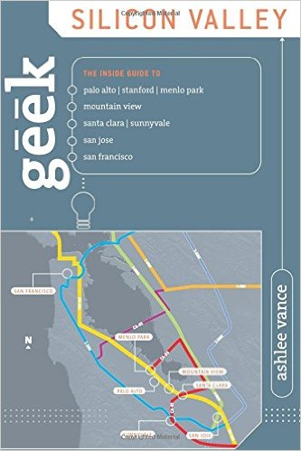

google-interview-university 筆記
Table of Contents
| Author | Yen-Chin, Lee <coldnew.tw@gmail.com> |
| Create Date | 2017-02-07 12:05:46 |
| Last Update | 2017-07-19 09:19:12 |
| GitHub | https://github.com/coldnew/google-interview-university |
關於這份文件
這是我依據 google-interview-university 上面的提案，進行學習所作的筆記，雖然目的不一定是要成為 Googler，但是要讓我成為更專業的開發者。
原作這建議將這張圖片印出來，每天膜拜一定可以有所成 (?)
Interview Process & General Interview Prep
DONE ABC: Always Be Coding
原文連結: https://medium.com/always-be-coding/abc-always-be-coding-d5f8051afce2#.4heg8zvm4
作者提供了幾個技巧:
- ABC (Always Be Coding)
你寫愈多程式，你可以學到愈多。其實就是這樣簡單，在你寫程式的過程中，也同樣在進行學習。找個想做的專案去作，並做到最好就是最好的練習方式了。
- Master at least one multi-paradigm language.
精通至少一種程式語言，學很多工具雖然好，但是你還是需要有一個專精的工具才行。作者列出的語言: C#, C++, Java, PHP, Python, Ruby。
- Complexities (複雜度)
你要了解所謂的複雜度 (Complexities)，這邊有一個表: Big-O Algorithm Complexity Cheat Sheet 可以讓你理解他的運作模式，並且你要
自行實作這些演算法。
A Gentle Introduction to Algorithm Complexity Analysis 也是一篇值得推薦的文章。
- Re-invent the wheel
自己重新製造輪子是一個吃力不討好的工作，不過可以在這過程中學習到很多資料結構、函式庫的概念。我覺得也可以自行去山寨那些知名的 APP, 這樣可以學到更多。
- Solve word problems
作者建議去解那些知名的問題，推薦了 Topcoder 這網站，以及 Data Science Tutorials 一文。去嘗試去解這些 問題 。
Repetition doesn't spoil the prayer. - Eric Schmidt
- Make coding easy
至少，讓你的程式碼看起來很簡單明瞭。這在面試時候的白板考題以及 pair programming 時候都很重要。
作者推薦文章: Whiteboarding
延伸閱讀: Clean Code
DONE Whiteboarding
文章連結: https://medium.com/@dpup/whiteboarding-4df873dbba2e#.hf6jn45g1
當在進行面試的時候，常常會需要有白板測試(whiteboarding)，就是面試官出題目，你在白板上面解題。
作者提出了幾個建議:
- Slow Down
放輕鬆，並嘗試在寫白板的時候，保持程式的整潔。這可以幫助你專注以及讓你的面試官可以清楚的理解你要表達的東西。
- Ask questions
大部分的面試問題都是故意含糊不明確的。面試官希望看到你如何處理這些不確定的事務。如果你在實作個演算法，這演算法的限制(constraints)是什麼?記憶體、執行環境(runtime)、輸入大小 ... 等等。
根據你的回答，面試官可以理解到你對於實際的答案的接近程度是怎樣。
- Code how you'd normally code
在白板上不要真的幹寫 50 行函式定義這樣的傻事。 (mmm... 原文意思雖大概知道不知道怎樣講...)
- Check your work
當你覺得你完成了，要記得檢查。包含了一些特殊狀況的處理，以及你是否犯了一些不該範的愚蠢錯誤。
- Practice
自我練習是最重要的。
- Research
你應該要了解你想要去工作的公司，因此要對該公司對作些研究。這樣在面試官問說:『為何你會想在這間公司工作?』這樣的問題的時候，你可以把你對該公司的理解，或是該公司的某些狀況拿來講。
- Have fun
享受這些挑戰，不要想的太複雜，有時候能不能在某間公司工作就只是場緣份而已。
TODO Effective Whiteboarding during Programming Interviews
TODO Cracking The Coding Interview Set 1:
TODO Gayle L McDowell - Cracking The Coding Interview (video)
TODO Cracking the Coding Interview with Author Gayle Laakmann McDowell (video)
TODO How to Get a Job at the Big 4:
TODO How to Get a Job at the Big 4 - Amazon, Facebook, Google & Microsoft (video)
TODO Prep Course
TODO Software Engineer Interview Unleashed (paid course)
別人的面試經驗
以下列出我看到有人分享的面試經驗，以及一些看法。
TODO Google's "Director of Engineering" Hiring Test
文章連結: http://www.gwan.com/blog/20160405.html
這一篇可以參考中文介紹: Google 偏愛白板談兵的大學畢業生，勝過業界多年實務經驗的老工程師？ | TechNews 科技新報。
老實說看了以後，我對 Google 面試官的能力深感懷疑，除了問的問題太簡單外，Gauthier (原文作者，也就是應徵者) 會回答的答案也差不多是我會回答的。
所以就讓我們挑那幾個 Gauthier 回答錯的問題仔細看看。


這一題寫過 Unix 程式的人都知道，面試官連基本知識都沒有，我們來透過 manpage 來看看 stat() 的描述:

看到沒，回傳值是 error code 而不是 inode metadata ，面試官去吃屎吧。

這一題我真的不懂面試官的邏輯，SIGNAL KILL 的簡寫就是 SIGKILL ，這訊號和 SIGNAL TERMINATE ( SIGTERM ) 本來就是不同的，用途也是不一樣。
那到底是誰發出 kill 訊號呢? 廢話，當然是 SIGKILL (9) ......
想知道 SIGKILL 和 SIGTERM 不同的人，可以參考這篇文章看看: SIGTERM vs. SIGKILL - major.io
這一題我想原始題目應該是要問: kill 這命令發出的是怎樣的 SIGNAL？ ，這樣的答案才符合 SIGTERM 這條件。

做工程的人永遠都要記得一件事，那就是 世界上沒有萬靈藥 。
quick-sort 雖然大部分狀況下都是 Ο(n log n) 的速度，但是最糟狀況會出現 O(n²) 這種情況。我們可以看看下表的比較圖:

所以真的有所謂的 best sorting 嘛? 沒有，畢竟好壞都是相對的，會依據情況不同而改變。 這邊來說說看為何 Linux kernel 選擇用 heap-sort 而不是 quick-sort。
由上面的排序比較可以知道， heap-sort 在各種狀況，即使是最糟糕的狀況都是 O(n log n) ，這增加了效能的可預測性，我們來看看 kernel 內 lib/sort.c 的貢獻者怎說的:
This patch adds a generic array sorting library routine. This is meant to replace qsort, which has two problem areas for kernel use. The first issue is quadratic worst-case performance. While quicksort worst-case datasets are rarely encountered in normal scenarios, it is in fact quite easy to construct worst cases for almost all quicksort algorithms given source or access to an element comparison callback. This could allow attackers to cause sorts that would otherwise take less than a millisecond to take seconds and sorts that should take less than a second to take weeks or months. Fixing this problem requires randomizing pivot selection with a secure random number generator, which is rather expensive. The second is that quicksort's recursion tracking requires either nontrivial amounts of stack space or dynamic memory allocation and out of memory error handling. By comparison, heapsort has both O(n log n) average and worst-case performance and practically no extra storage requirements. This version runs within 70-90% of the average performance of optimized quicksort so it should be an acceptable replacement wherever quicksort would be used in the kernel.
還在幻想有一勞永逸的方法? 別鬧了，請以實際狀況為準。


結論： 沒能力的人坐領高薪真好 QQ
TODO 歐洲 Facebook、Google、Booking 面試
TODO I Didn’t Get Hired. Here’s Why
TODO Google Interview
TODO [心得] 第二次 Google 面試洗臉心得
TODO lnishan's Google Interview
連結: Google Interview
持續的自我學習
以下列出一些我的額外讀物
[ ]awesome-competitive-programming
A curated list of awesome Competitive Programming, Algorithm and Data Structure resources
[ ]xareelee/BeingAProgrammer: 蒐集關於身為一個程序員的修養資訊
列舉一些不錯的書單。
[ ]Practice and Learn - Google Code Jam
其他參考
TODO How to Work at Google: Example Coding/Engineering Interview
這是 Google 提供的參考面試影片。
TODO How Do You Estimate What You Don't Know?
TODO Bret Victor – Inventing on Principle
其他書單
DONE M 社軟體開發見聞錄
這是從 M 社 (Microsoft) 退休的 RD 的心得, 寫在 GitBook 上，非常值得當課外讀物來看。
DONE Soft Skills: The Software Developer's Life Manual
Amazon: https://www.amazon.com/Soft-Skills-software-developers-manual/dp/1617292397

這本書有簡體翻譯本。此書裡面整理了軟體開發者從如何找工作等面試資訊，到你應該學習投資、養成運動習慣之類的資訊都涵蓋了，是一本對於 軟體開發者 蠻不錯的書籍。
這本書也在 Soft & Share | 每位認真的程式設計師都要讀的 10 本經典書 推薦書單內，建議買來看。
TODO 英、日語同步 Anki 自學法
博客來: http://www.books.com.tw/products/0010740471

不管學了在多的技術，語言是用來溝通用的工具也是很重要的。這本書好像不錯，拿來學習看看。詳細說明請見:原作者部落格 。
這本書垃圾話很多，我建議去圖書館借就好。基本上就是軟體的教學，沒有到非常值得一定要買下來擺在家裡恭奉的理由。
TODO Geek Silicon Valley
Amazon: https://www.amazon.com/Geek-Silicon-Valley-Sunnyvale-Francisco/dp/0762742399

這本是在 灣區日報 看到的推薦書，可以當成矽谷旅遊書籍來看，也可以當成講解矽谷的歷史書籍。
TODO Software Engineering at Google
TODO Disrupted: My Misadventure in the Start-Up Bubble
程式練習
以下列出我應該要一個一個攻破的練習網站。
TODO Hacker Rank
TODO Leet Code
TODO KHANACADEMY
TODO
其他
DONE Mistakes I made as a developer
中文: 別轉管理，十年程序員老鳥給新手的幾條忠告 - 開源中國社區
作者為 Google 柏林開發者團隊領袖，依照他的建議如下:
- 堅持在一個 framework 或是語言
大概他認為專精比較重要吧，不過如果以台灣來看，通才很多時間更重要的。
作者提到了:
Switching platforms creates a huge negative impact in your CV. It's really hard for an employer to justify paying a big sum of money for a developer that is not an expert on a particular product.
簡單講就是太通才了，很難讓人認為你會適合某個特定位置。
- 不要因為 $$ 而轉向管理職
不過一樣在台灣，管理職比較賺錢.... 而且在匪區會有這種狀況: 如何評價 2017 年初華為開始「清理」34 歲以上的職員？ - 程序員 - 知乎
- 休息一段時間
這可能就像是讓你可以充電吧，的確有時很忙會想休息一段時間。而這段時間可以多學點別的東西。
- ABC: Always be coding
這和 ABC: Always Be Coding 這篇文章強調的一樣，你要寫了才會，要多寫多學，這也同時對你工作面試有幫助，因為你可能會遇到某種方式的處理方法，而這正是對方想要的。
- 成為開發者社群的一部分
可以認識人。也可以從夥伴們中學到有趣的東西。
- 不要再招聘網求職
當到了某個年紀，找工作最好是被人推薦的。其實很多很好的工作也要被推薦才能進去。